Red neuronal recurrente LSTM de 2 capas para el análisis predictivo de series temporales financieras. Procesa cinco acciones (AAPL, GOOGL, MSFT, TSLA, AMZN) con datos de 2020–2025 y evalúa la precisión con métricas cuantitativas rigurosas.
Los mercados financieros son sistemas complejos, no lineales e impredecibles. Las predicciones generadas no constituyen asesoramiento financiero ni deben usarse para decisiones de inversión reales. Los resultados pasados no garantizan resultados futuros.
Mejor MAPE
2,10%
Microsoft (MSFT)
Acciones analizadas
5
AAPL · GOOGL · MSFT · TSLA · AMZN
Datos históricos
~1.500
Días por acción (2020–2025)
Arquitectura
100–50
Unidades LSTM por capa
| # | Ticker | MAPE | RMSE | Interpretación |
|---|---|---|---|---|
| 01 | MSFT | 2,10% | $11,91 | Excepcional |
| 02 | GOOGL | 2,91% | $7,96 | Excepcional |
| 03 | AAPL | 3,29% | $9,36 | Excepcional |
| 04 | AMZN | 3,61% | $9,35 | Excepcional |
| 05 | TSLA | 7,55% | $33,61 | Muy bueno* |
* Tesla presenta mayor volatilidad inherente, lo que justifica un MAPE más elevado. Valores de MAPE < 5 % se consideran excepcionales en predicción financiera.
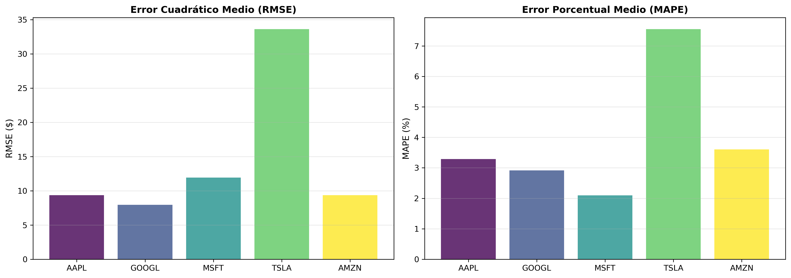
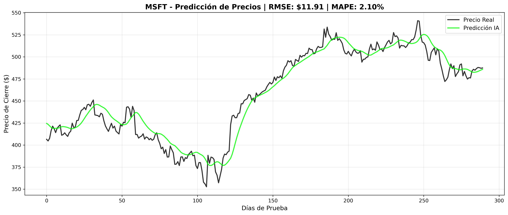
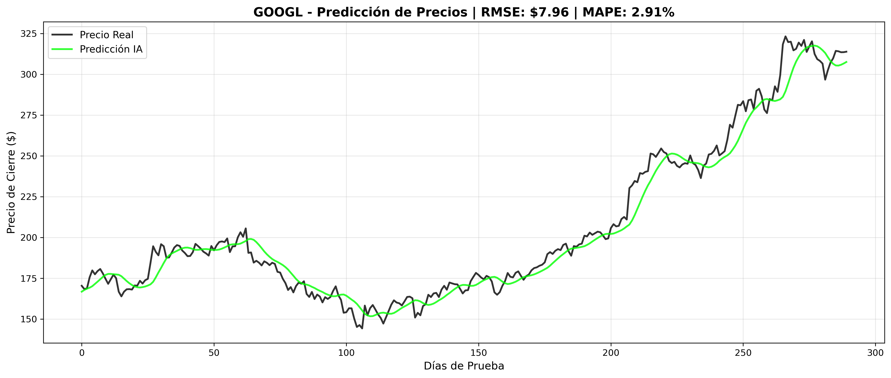
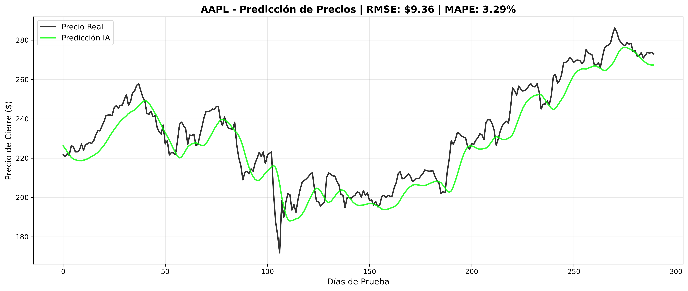
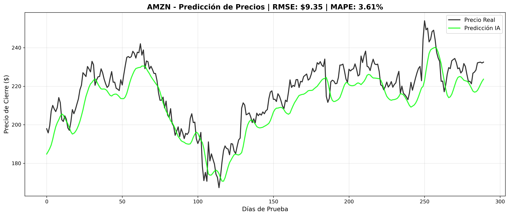
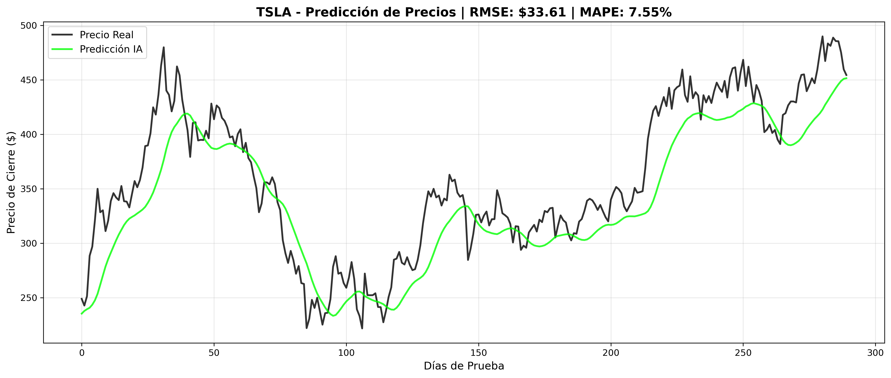
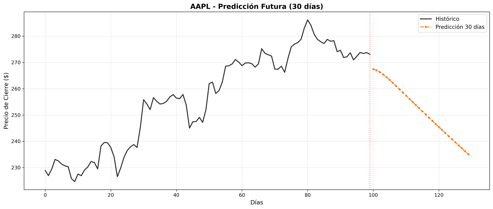
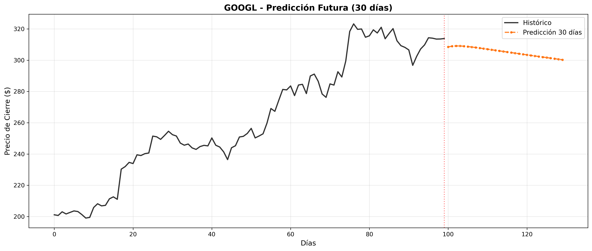
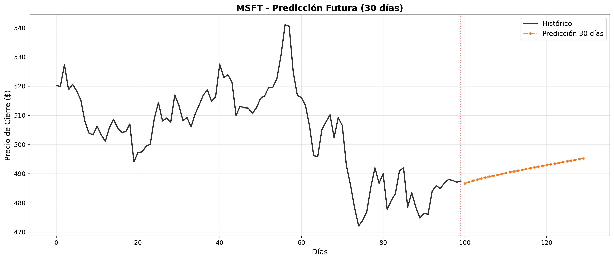
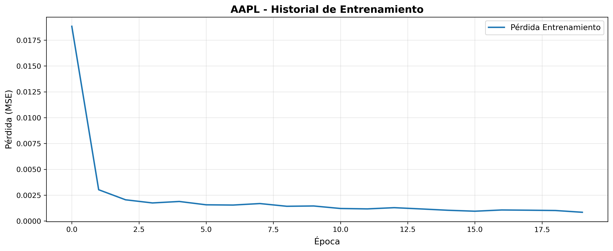
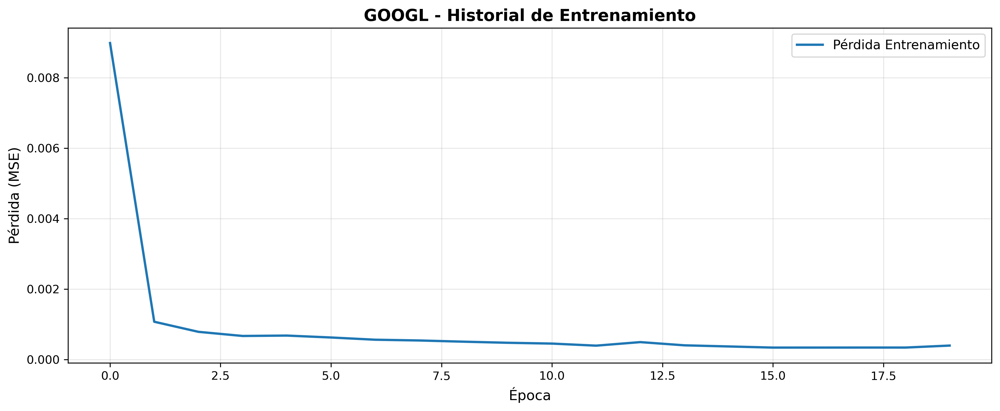
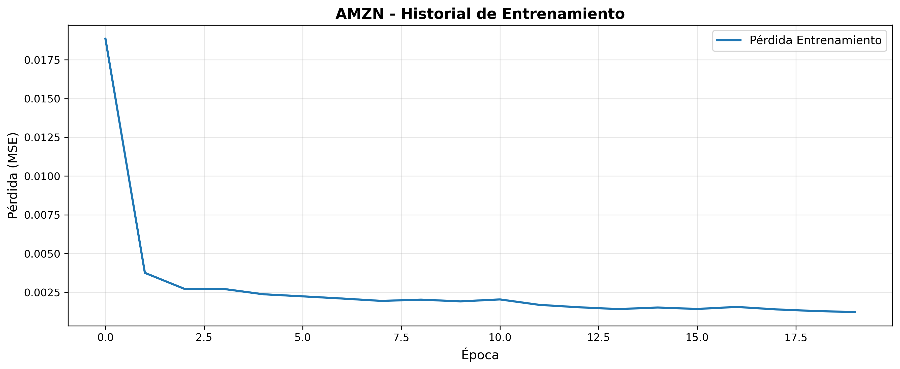
Red recurrente de 2 capas LSTM con regularización dropout para prevenir overfitting:
config.pyParte del rigor del proyecto es documentar lo que este tipo de sistemas no puede hacer: